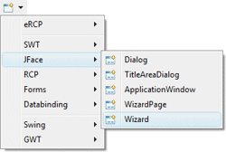

<html>

<head>
<title>JFace Wizard Wizard</title>
<link href="../../../book.css" rel="stylesheet" type="text/css">
</head>

<body>

<h1>JFace Wizard Wizard</h1>

<table border="0" cellpadding="0" cellspacing="0" width="800">
  <tr>
    <td>Subclasses of the JFace <b>Wizard</b> class can be
              created using the <b>JFace Wizard</b>&nbsp; wizard. The wizard can be
              selected from the drop down wizard menu or from the
              Eclipse <b>New</b> wizard.
              <p>To use the wizard, select the project source folder and package
              to contain the class. Then enter the class name, use the <b>Add</b> 
				button to add individual <b>WizardPages</b> that have already 
				been created, and hit the <b>Finish</b>
              button.</td>
  </tr>
  <tr>
    <td><br>
	&nbsp; 
	</td>
  </tr>
  <tr>
    <td>
	<p><br>
	</p>
    <p>The wizard generates the following code.</p>
      <blockquote>
              <dl>
                <dt><b><font face="Courier" size="2" color="#7f0055">import</font></b><font face="Courier New" size="2"> 
				org.eclipse.jface.wizard.Wizard;<br>
				<br>
				</font><b><font face="Courier" size="2" color="#7f0055">public</font></b><font face="Courier New" size="2">
				</font><b><font face="Courier" size="2" color="#7f0055">class</font></b><font face="Courier New" size="2"> 
				JfaceWizardTest </font><b>
				<font face="Courier" size="2" color="#7f0055">extends</font></b><font face="Courier New" size="2"> 
				Wizard {<br>
				<br>
&nbsp;&nbsp;&nbsp; </font><b><font face="Courier" size="2" color="#7f0055">
				public</font></b><font face="Courier New" size="2"> 
				JfaceWizardTest() {<br>
&nbsp;&nbsp;&nbsp;&nbsp;&nbsp;&nbsp;&nbsp; setWindowTitle(</font><font size="2" color="#2a00ff" face="Courier">&quot;New 
				Wizard&quot;</font><font face="Courier New" size="2">);<br>
&nbsp;&nbsp;&nbsp; }<br>
				<br>
&nbsp;&nbsp;&nbsp; </font><b><font face="Courier" size="2" color="#7f0055">
				public</font></b><font face="Courier New" size="2"> </font><b>
				<font face="Courier" size="2" color="#7f0055">void</font></b><font face="Courier New" size="2"> 
				addPages() {<br>
&nbsp;&nbsp;&nbsp;&nbsp;&nbsp;&nbsp;&nbsp; addPage(new FirstPage());<br>
&nbsp;&nbsp;&nbsp;&nbsp;&nbsp;&nbsp;&nbsp; addPage(new SecondPage());<br>
&nbsp;&nbsp;&nbsp;&nbsp;&nbsp;&nbsp;&nbsp; addPage(new ThirdPage());<br>
&nbsp;&nbsp;&nbsp; }<br>
				<br>
&nbsp;&nbsp;&nbsp; </font><b><font face="Courier" size="2" color="#7f0055">
				public</font></b><font face="Courier New" size="2"> </font><b>
				<font face="Courier" size="2" color="#7f0055">boolean</font></b><font face="Courier New" size="2"> 
				performFinish() {<br>
&nbsp;&nbsp;&nbsp;&nbsp;&nbsp;&nbsp;&nbsp; </font><b>
				<font face="Courier" size="2" color="#7f0055">return</font></b><font face="Courier New" size="2">
				</font><b><font face="Courier" size="2" color="#7f0055">false</font></b><font face="Courier New" size="2">;<br>
				&nbsp;&nbsp;&nbsp; }<o:p>
                  </o:p>
                  </font></dt>
                <dt><font face="Courier New" size="2">}</font></dt>
              </dl>
      </blockquote>
    </td>
  </tr>
</table>
</body>
</html>
